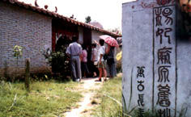

杨贵妃的籍贯问题，史学界历来众说不一，但从有关史料来看，考证为容县籍的依据较为充分。其中最具权威的根据是《全唐文》许子真所写的《容州普宁县杨妃碑记》，碑记中称：“杨妃，容州杨冲人也，离城一十里，小名玉娘……”容州杨冲，即今容县十里乡杨外村。许子真在唐天宝年间任四门助教，与贵妃是同时代的人物，熟悉她的身世，他所写的碑记，应具有较高的真实性。
杨贵妃是我国古代四大美人之一，是历代大诗人李白、白居易等吟咏过的女性，在各地民间戏曲中也经常出现，可以说是家喻户晓的人物，在国外一些地方也很有名气。贵妃不但天生丽质，而且聪颖昭慧，才艺超群，她的身世坎坷，生于贫困农家，两次被“转卖”，千里迢迢，离乡进入唐王朝宫庭，最后被无辜赐死。她的一生是我国古代封建社会弱女子不幸遭遇的真实写照。人们给予无限同情，她的出生地也就成为大家关心的问题。因此，杨外村贵妃出生地遗址是容县乃至广西具有吸引力的重要人文旅游资源。
遗址位于杨外村岭咀村附近，离县城约10公里，现存遗址有：
贵妃井
原为用矩形方石围成的浅井，贵妃幼年时常在井边帮家人汲水。相传小玉环因饮此井水而容貌艳丽。
贵妃庙
此庙解放后仍保存，1965年折毁。近年村民又在原址的基础上重建。庙堂正中供奉贵妃塑像。庙门两侧楹联题为：“杨外诞生籍本容州焉可议，马嵬赐终仙成蓬岛尚存疑。”周围视野开阔，庙门朝南、土坡之下为低丘、农田，远处群山延绵。庙后数座土山环绕，宛如碧莲花瓣，其上长满荔枝林，郁郁葱葱。玉环生前喜吃荔枝，乡亲选在这里建庙，也是别具一番情意的。
贵妃山
在岭咀村东北金牛岭，相传山中有杨贵妃祖坟。这一带群山起伏，海拔一般在300米以下。山中沟谷林木繁茂。